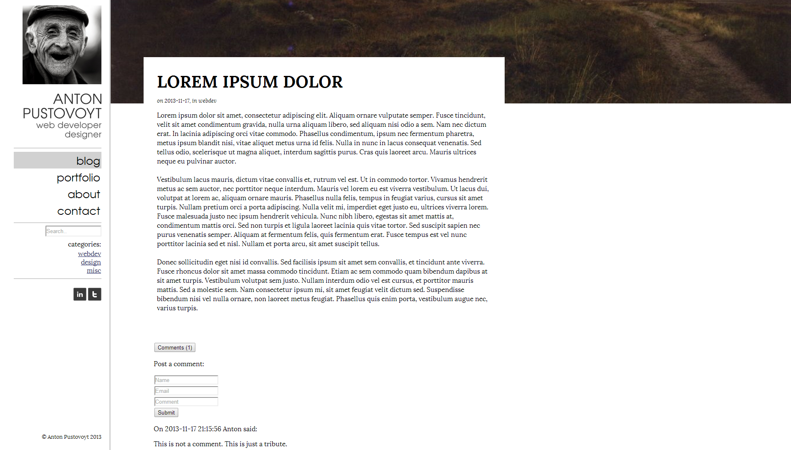

Anton Pustovoyt
Web and game developer from Stockholm, Sweden.
Works (newest first):
anton.pustovoyt[at]gmail.com
Ottoboni intranet
sass, html5, compass, jQuery, responsive design, EPiServer
I was tasked with visual re-design of Ottoboni's existing intranet framework in order to adapt it to the company's graphical profile. I had no back-end support available, which resulted in some compromises when it comes to the elements and functionality.
Mobile version, which's design was somewhat limited by the existing framework.
Able lounge
css, html5, wordpress, photoshop, web-design
I designed a webpage for a beauty and lifestyle company, mockup of which was later implemented in wordpress with parallax scrolling.
Streetlevel Culture
css, html5, wordpress, photoshop, web-design
I designed and developed a webpage for a couple of fashion designed and photographers from New York. They required a very minimalistic look, with certain uncommon elements such as horizontally scrolling image gallery.
http://streetlevelculture.com/home/Eventon
css, html5, php, mySQL, uml, web-design
This was an early school project, where we were tasked with making a new classroom/lessons management system for the school. My group and I decided to take it one step further, by adapting the system to be as generic as possible so it could be used for any kind of event management. I designed the logic, database, and parts of the system.
https://github.com/Cronnix/eventonBlue mocha
css, html5, web-design
A minimalistic blog theme I've designed for a friend a while back, which this site is inspired by.
https://github.com/Cronnix/BlueMochaA blog
css, html5, php, mySQL, web-design
This was the very first webpage I've made, in September 2013. It was meant to be my blog, where main focus was on implementing a solid backend for creating and editing posts. It's made without any kind of frameworks, just pure html and php. Considering it was my first web design, there's obvious lack of details such as bad styling on input fields.
https://github.com/Cronnix/blog NinjaPvP
Game design, UX design, monetization, core loops, Unity
NinjaPvP is a free-to-play online action game. I joined the project when it already was in alpha, and re-made the core design of the game from ground up which resulted in more entertaining and funnier gameplay. I was also responsible for designing the monetization system.
http://www.ninjapvp.com/Empathy
Game design, 3D art, UX design, project management, level design, scripting, Unreal Engine
My most ambitious project to date, which is still under development and will continue being so for a while. Empathy is an adventure game set in a dying world, where you play as a child who can change the world through emotions. Empathy focuses on the human aspect of the story, featuring visual storytelling. I was the game designer, project manager in a group of five developers, and the level designer as well as helping with 3D assets.
http://www.indiedb.com/games/empathy
Ashes of Mankind
Game design, UX design,
Ashes of Mankind is a multiplayer PvP game, to which I contributed with game design. It's currently in alpha.

Steam chatbot
node.js, steam api, irc api, mySQL, json
I wanted to learn node.js as well as how to handle web api, so I've made an irc bot, which idles in a channel and alerts as soon some of its users are playing a game on Steam so others can join them.
https://github.com/Cronnix/steamy